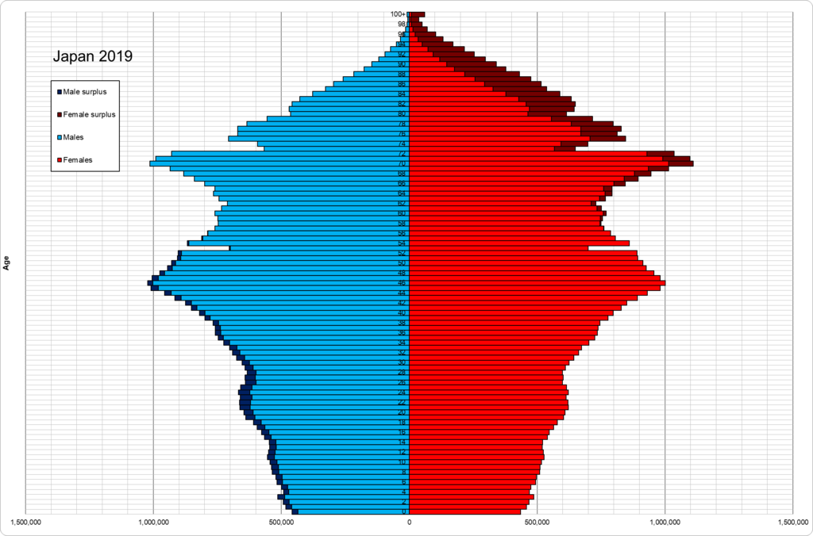

Le film Plan 75 (lire aussi notre post : Suicide assisté et dystopies) de la réalisatrice japonaise Chie Hayakawa débute par un meurtre de masse, un homme tuant des personnes âgées afin de « soulager l'économie du Japon », dit-il. Le gouvernement déclare ensuite la mise en place du Plan 75, un programme d'incitation au suicide assisté pour les plus de 75 ans.
« J'ai essayé de critiquer cette société qui donne la priorité à l'économie et à la productivité sur la dignité humaine. Éliminer ce qu'ils appellent "les improductifs" est un concept très proche du fascisme. »
Hayakawa explique que l'inspiration pour son film – d'abord un court-métrage sur les futures questions sociales japonaises – vient du massacre du 26 juillet 2016 à Sagamihara. Un homme de 26 ans, ancien employé d'une institution pour personnes handicapées, avait blessé 25 et assassiné 19 résident·es de ce centre.
Il s'agissait d'un projet politique validiste : quelques mois avant son acte, le meurtrier avait transmis aux autorités une lettre demandant la légalisation de l'euthanasie pour les personnes polyhandicapées, à la demande de leurs proches (“un meurtre, donc”), afin d'améliorer l'économie japonaise – se proposant même de commettre ces meurtres. Il expliqua ensuite à la presse avoir agi « pour le bien de la société ».
« Dans notre société, nous blâmons et excluons les personnes socialement vulnérables. Pas seulement les personnes handicapées mais aussi les personnes âgées et les pauvres. »
Le Japon est un des pays à la plus forte proportion de personnes âgées (près d’un tiers). Les inégalités du système de retraite forcent certaines d’entre elles à travailler très tard, comme dans le film.
En France aussi, l’angoisse démographique se manifeste, à l’image des propos du président Macron en janvier 2024 sur le « réarmement démographique » face à la baisse de la natalité depuis 15 ans.
Ne nous méprenons pas : il ne promeut pas une société de justice reproductive, de place pour les enfants, de lutte contre les violences qu’iels subissent… Le lexique guerrier éclaire : il s’agit surtout de discours sexistes, racistes, qui imaginent les enfants (si possible blancs) comme futurs travailleurs et soldats pour la Nation.
Les projets de légalisation du suicide assisté ou de l’euthanasie s’inscrivent dans une tendance politique de fond, très éloignée du “progrès” et de la “liberté” qu’on nous vante. C’est un projet qui a accepté des millions de morts du COVID-19, renoncé à la prévention sanitaire (épurateurs d’air publics, masques), qui repousse l’âge de la retraite, masque sous l’espérance de vie des écarts sociaux majeurs, menace l’accès à la santé pour les plus précaires, et réserve la vie longue à celles et ceux qui sont valides, blancs et productifs. Pour les autres, on s’accommode de leur disparition.
